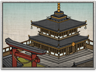

Basic Unit Statistics (can be modified by difficulty level, arts, skills, traits and retainers)
| Recruitment Cost | 1000 | |
| Upkeep Cost | 220 | |
| Melee Attack | 4 | 11% |
| Charge Bonus | 6 | 12% |
| Bonus vs Cavalry | 0 | 0% |
| Range | 175 | 26% |
| Accuracy | 60 | 60% |
| Reloading Skill | 55 | 55% |
| Ammunition | 30 | 37% |
| Melee Defence | 1 | 2% |
| Armour | 2 | 13% |
| Morale | 12 | 24% |
Strengths & Weaknesses
- Very long range and fast reload time.
- Very accurate.
- Very good morale.
- Weak against cavalry and in melee.
Abilities
- Flaming Arrows - This unit can fire flaming arrows for a short period of time. Flaming arrows have a greater damage effect and can set fire to flammable objects. Flaming arrows don't function in wet weather.
- Screens - A shield that can be erected during the deployment phase when you are defending. It impedes the movement of enemies, and blocks enemy projectiles.
- Whistling Arrows - Whistling arrows have an unsettling effect on both enemy and friendly troops, reducing their morale and combat ability for a short period when they fly over them.
Requires
- Buildings: 

- Religions:

Description
These skilled warrior monks can fire arrows at distant enemies with every expectation of doing terrible damage.
Warrior monks are armed with powerful bows that can send arrows into enemies at a surprising, and fatal, distance. They can also bombard foes with fire arrows, weapons that are both incendiary and terrifying in equal measure, especially in a country such as Japan where buildings are largely made of wood. These warrior monks need careful handling in the presence of the enemy. They are not specially trained to fight in melee, and are likely to suffer if they are attacked by cavalry. Because of their small numbers, they will not last long if they are left in close combat, regardless of any friendly support. Bow warrior monks practice archery with the same dedication they give to their religious duties. Indeed, the skill and still poise required for archery practice is as much an act of meditation as any amount of quiet, monkish contemplation. Long years of practice, however, pay off in battle because the technique of using a bow is so ingrained as to be done without thought or hesitation. Given reasonable weather, monks could, and did, kill anything and anyone foolish enough to stray into range.